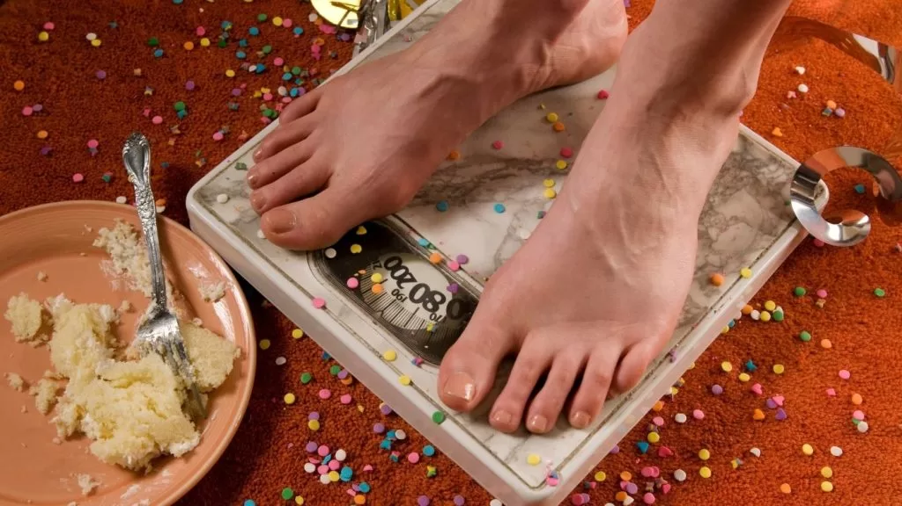
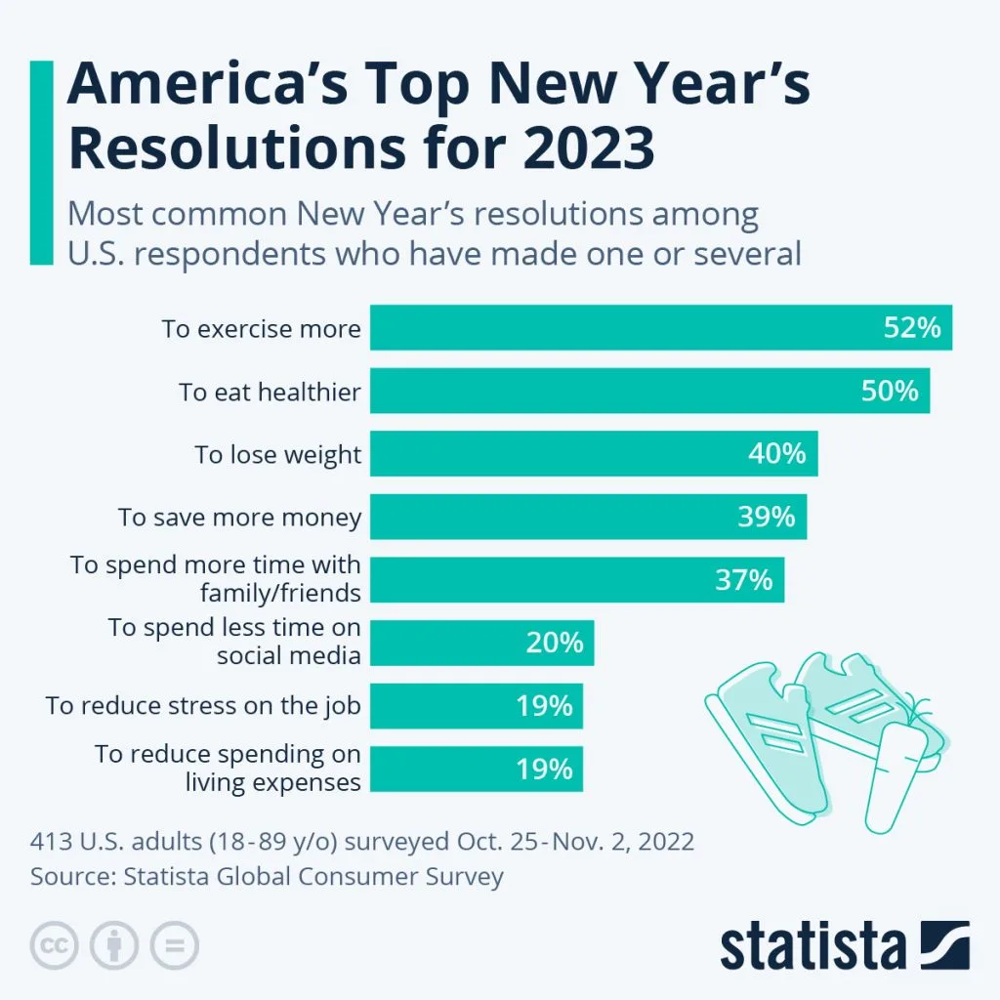

Talán túlzásnak tűnik, de egyes vélekedések szerint az újévi fogadalmak története a több mint 4000 évvel ezelőtt virágzó ősi babiloni birodalomig vezethető vissza. A feljegyzések szerint itt tartottak először ünnepséget az újév tiszteletére, igaz, náluk március közepén kezdődött az év, vetés idején. A 12 napos ünnepségen többek között ígéreteket tettek isteneiknek. Ezek tekinthetők az újévi fogadalmak előfutárainak.
Az európai történetírás Julius Caesarhoz köti a januári ígéreteket, ugyanis ő volt az, aki Kr.e. 46-ban január elsejét tette meg az új év első napjának. A január Janusról, a kétarcú istenről kapta a nevét, akinek Caesar elsőként tett fogadalmat az év kezdetén. Különleges jelentősége volt a rómaiak számára. Abban hittek, hogy Janus egyszerre néz vissza az előző évbe és a jövőbe. A rómaiak áldozatot mutattak be az istenségnek, és különböző ígéreteket tettek.
A szilveszteri fogadalmak általában közvetlenül pezsgőbontás után hangzanak el. Lássuk, milyen elhatározások születtek idén!
 Az újévi fogadalmak listáján továbbra is vezet az edzés, a fogyókúra és az egészséges életvitel elkezdése.Az amerikaiak 37%-a mondta azt, hogy tesz fogadalmat 2023-ra, de ami ennél meglepőbb, hogy a fogadalmat tevők 87%-a bevallása szerint tartani is fogja magát ahhoz, amit kitűz célként. Ez annak a fényében érdekes, hogy az elmúlt években is hasonló fogadalmak végeztek a lista elején.
 A legnépszerűbb újévi fogadalmak listája 2023-ra.A fogadalmat tevők több mint fele tervezi, hogy többet mozog 2023-ban. Közel ennyien vannak azok is, akik egészségesebb étkezést céloztak meg. Továbbra is népszerű a plusz kilókkal kapcsolatos fogadalom is. Az első három hely hasonlóan alakult 2022-ben, de idén többen akarnak spórolni és takarékoskodni, ami minden bizonnyal a drágulás és a nehezedő gazdasági helyzet miatt van.
Arról, hogy mennyire vagyunk sikeresek fogadalmaink teljesítésében, több adat is elérhető. Ezekből látszik, hogy a felnőtt lakosság közel fele tesz valamilyen dátumhoz köthető fogadalmat az élete során, de a fogadalmat tevők csupán 10–20%-a képes meg is valósítani vállalását. Januárban még viszonylag motiváltak vagyunk, de februárban jócskán visszaesik az ígéretek sikerességi rátája. Az eredményesség sajnos a kor előrehaladtával tovább romlik. A 20-as éveikben járókhoz képest az 50-en túliak között már csak fele annyi a fogadalmát teljesítő ember.
Hogyan viheted sikerre az újévi fogadalmad? Itt megtudhatod.